Haldex
«Обратились с поломкой полного привода, приговорили насос муфты Haldex.» «Главное результат и согласований всех действий по ходу пьесы. )»
Илья БабкинКоломна, ул. Леваневского, 36 · вт–сб 9–19
Профильный сервис Volvo: ТО, Haldex, электрика, 3D-развал-схождение на стенде Hunter и шиномонтаж. Берут и другие машины – Geely, SsangYong, Tank.
«Андрей и Алексей , при возникновении каких либо ситуаций всегда находят решение, Volvo знают на 5!»Сергей Иванов, S40 и XC70
Руль стоит криво
Стенд Hunter и мастер, который после регулировки проверяет, ровно ли стоит руль. За это сюда и едут.
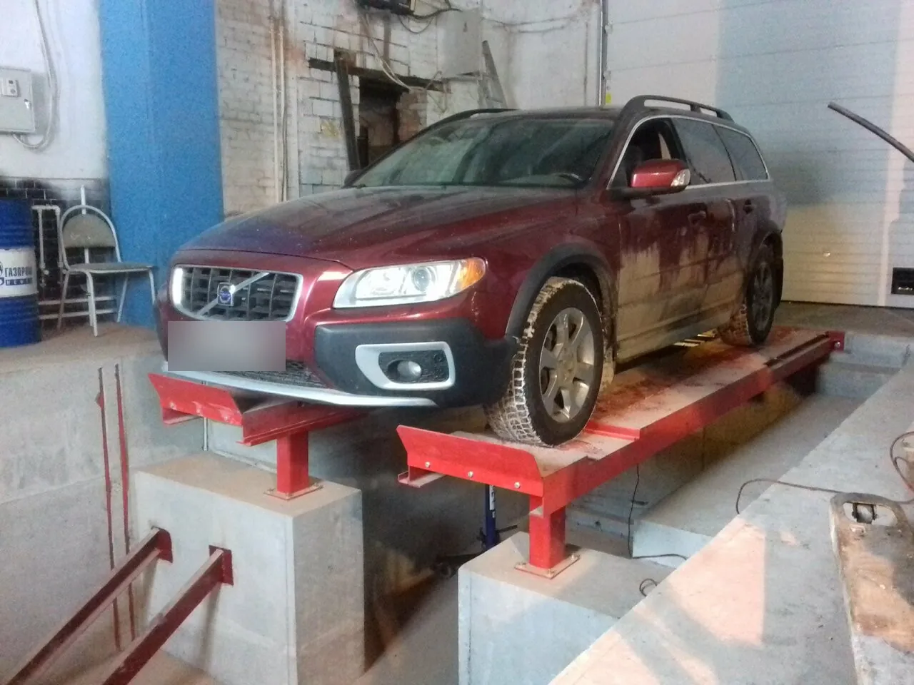
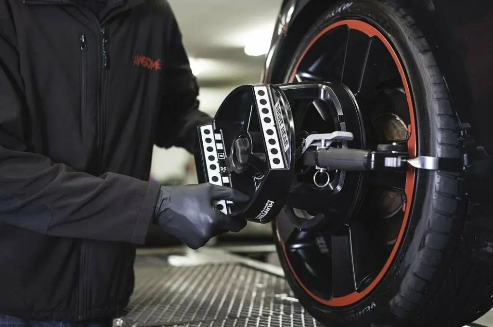
«Сход- развал , который делает Сергей ( руль по уровню выставляет) мало ,кто сейчас так делает- после регулировки проблемм не возникало.»
Сергей Иванов«Обращался до этого в два автосервиса, никто не додумался посмотреть кривизну руля . В данном сервисе обратили на это внимание и все сделали .»
Денис Гущин«Делал сход-развал на танк300 - идеально»
Алексей Ботя0 ₽проверка развала – так указано в карточке сервиса. Цена регулировки – в прайсе ниже.
Сюда ездят на Volvo годами – и сравнивают с московскими сервисами.
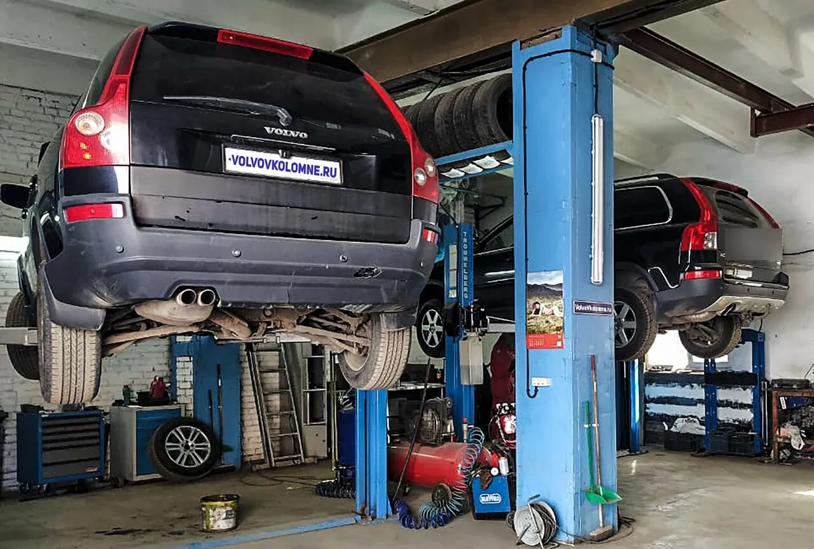
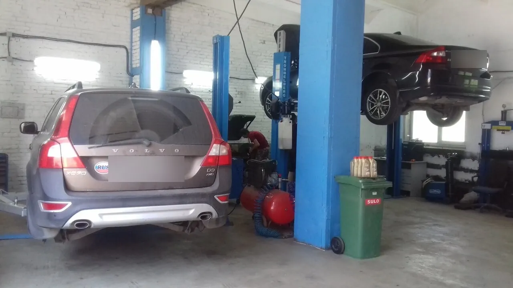
«Обратились с поломкой полного привода, приговорили насос муфты Haldex.» «Главное результат и согласований всех действий по ходу пьесы. )»
Илья Бабкин«Спец инструмент для Volvo в наличии, грамотный и дружелюбный коллектив.»
Сергей Иванов«Профильный сервис Вольво. Обслуживаю свои авто у них более 5 лет. Проблем нет, ценник адекватный. В наличии все расходники.»
Виктор Соломевич«Обслуживаю свою хс70 здесь уже не один год. Лет шесть точно.» – Дмитрий Усанов
«Обслуживаю свои авто у них более 5 лет.» – Виктор Соломевич
«Третий год подряд приезжаю сюда на шиномонтаж и т.о своей ласточки» – Сергей Фадейкин
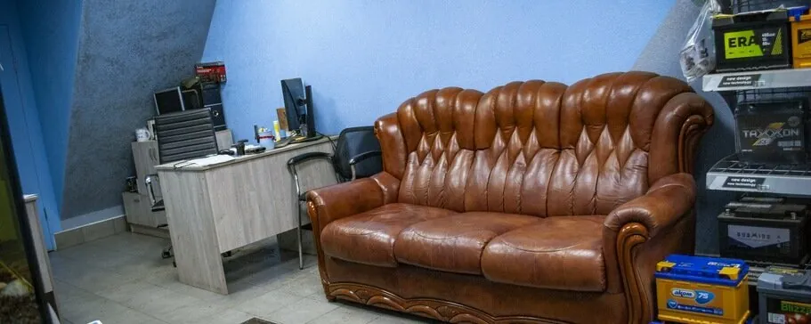
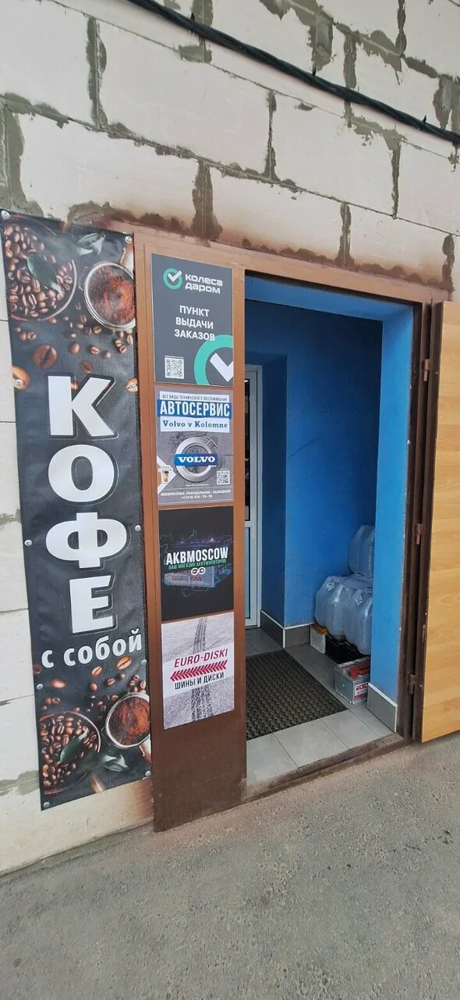
«клевое место ожидания для клиентов .»
Дмитрий Шанявский«дружеская атмосфера. Четкая работа. Чистый туалет!»
Олег Ганжа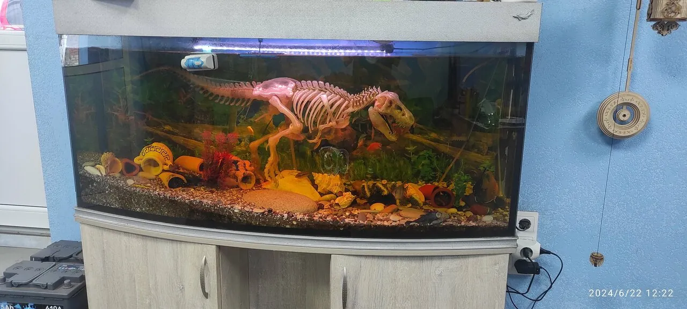
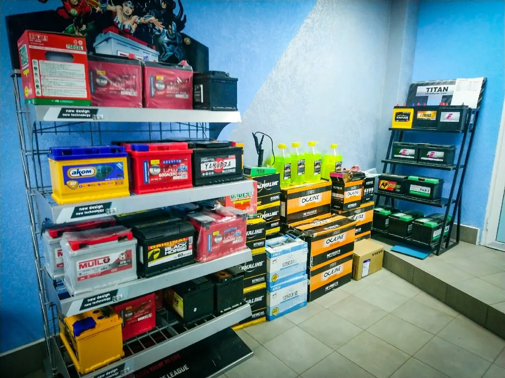
Продажа и обслуживание. Если машина не заводится – помогут запустить.
«Быстро приехали помоги запустить двигатель. Спасибо.»
Тихо Лихо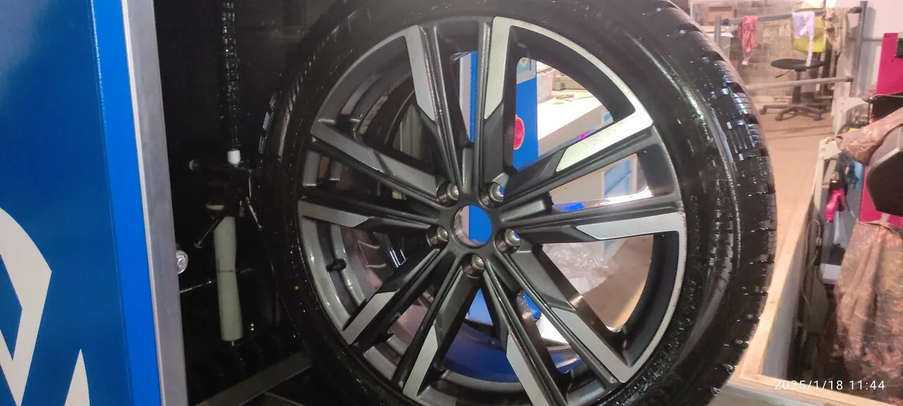
«Покупал летнюю резину. Доставка 5 дней. Шиномонтаж бесплатно, быстро, качественно.»
Александр Ан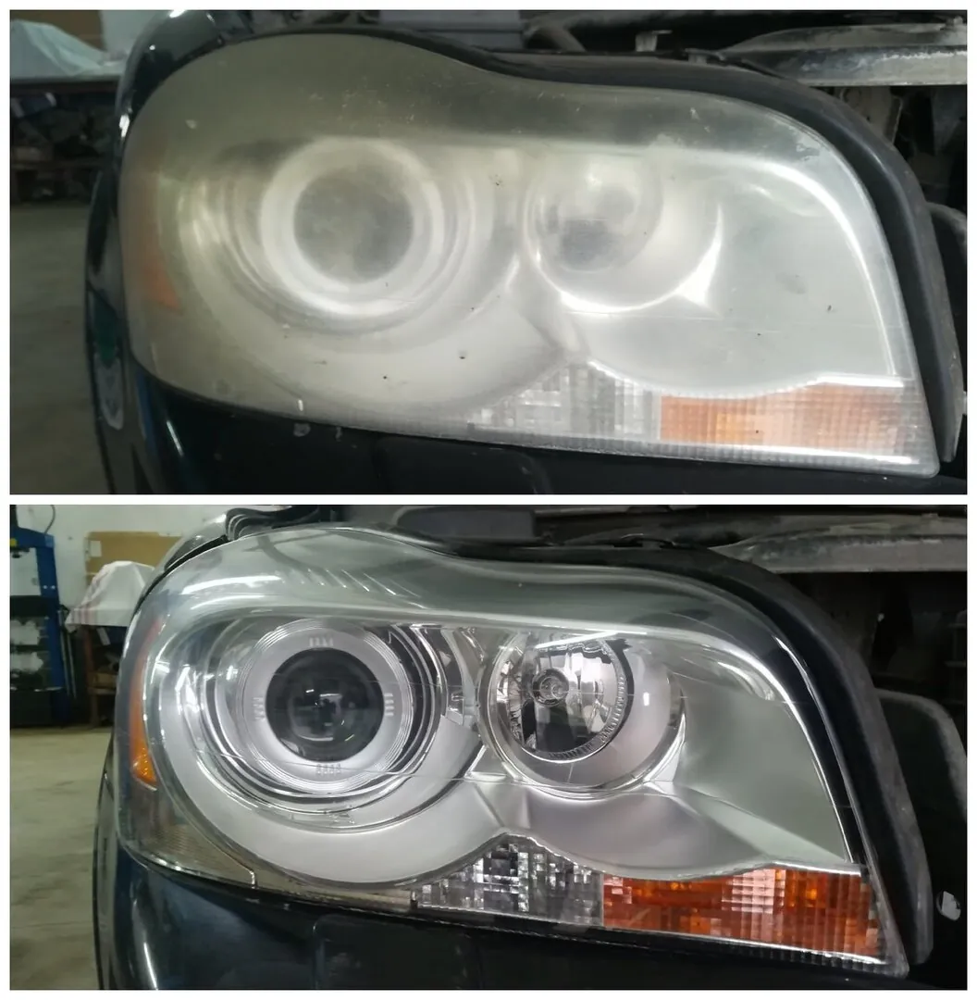
Мутные фары снова прозрачные, свет – куда нужно.
Цены из карточки сервиса на Яндекс Картах, они могли измениться. Точную сумму назовут по телефону.
Гарантия на работы: {{условия гарантии}}
4,987 оценок и 48 отзывов на Яндекс Картах · «Хорошее место 2026»
Постоянно обслуживаю Volvo ( в семье 2 машины - S 40 и XC70) Всегда ремонт качественный и профессиональный! Есть с чем сравнивать, включая известный клубный сервис в Москве, где специалисты менее квалифицированны , чем здесь. Спец инструмент для Volvo в наличии, грамотный и дружелюбный коллектив. Постоянно обслуживаюсь у механика Виталия,. Сход- развал , который делает Сергей ( руль по уровню выставляет) мало ,кто сейчас так делает- после регулировки проблемм не возникало. Андрей и Алексей , при возникновении каких либо ситуаций всегда находят решение, Volvo знают на 5! Все супер !!!!!👍
Обслуживаю свою хс70 здесь уже не один год. Лет шесть точно. Качество сервиса и уровень цен адекватные. Запчасти можно заказать в сервисе, а можно со своими приехать. Никто ничего не навязывает, но могут дать обратную связь по некоторым расходникам, чтобы деньги на ветер не потратились. Помимо ТО и развала здесь же можно сделать шиномонтаж, и даже заказать новую резину и бесплатной установкой - цены на уровне интернет-магазина. Однозначно рекомендую. PS. К ТО стараюсь составить список того, что по моему мнению/слуху надо особенно тщательно проверить. Всего с вниманием относятся к таким вопросам и всегда дают обратную связь.
Хороший профильный сервис. Обратились с поломкой полного привода, приговорили насос муфты Haldex. За весь комплекс работ по решению этой проблемы отдали 28 т. рублей. Главное результат и согласований всех действий по ходу пьесы. ) Спасибо коллективу!
Рекомендую данный сервис . Проблема была со сходом-развалом. Обращался до этого в два автосервиса, никто не додумался посмотреть кривизну руля . В данном сервисе обратили на это внимание и все сделали . Рекомендую. Цены тоже приемлимые .
Ехал в Коломну, машина плыла по трассе, решил проверить сход развал, созвонился - договорился. Приехал и меня ждали - это приятно. Сами загнали машину на эстакаду. Осмотрели, сказали что всё нормально, денег за посмотреть не взяли. Спасибо большое. Есть место где подождать. Мне понравилось.
Профильный сервис Вольво. Обслуживаю свои авто у них более 5 лет. Проблем нет, ценник адекватный. В наличии все расходники. Рекомендую!
Была вибрация в рулевом управлении, заехал на балансировку колес с виброконтролем, всё сделали на высшем уровне. Вибрация пропала.
Ездила на сход/развал для Джилли Монджаро. Возникли некоторые вопросы, но ребята оперативно всё решили. Есть помещение где можно подождать свою машинку. Спасибо!
Обслуживался в этом автосервисе, остался очень доволен. Мастера — настоящие профессионалы, адекватные и толковые. Сразу видно, что разбираются в своём деле. Работу выполнили качественно и в срок. Цены не кусаются. Рекомендую!
Все супер. Ребята реальные молодцы. Если что то сломано - сделают. Если чего то не хватает - добудут. В Коломне лучшего автосервиса нет. Отдельное спасибо мастерам Сергею, Дмитрию и приёмщику Алексею. Очень доволен, ребята спасибо Вам за Ваш труд.
Санг йонг кайрон дизель у меня не ехал, нашли причины и устранили быстро, я доволен, и теперь буду обращаться только туда, спасибо!!!
Покупал летнюю резину. Доставка 5 дней. Шиномонтаж бесплатно, быстро, качественно. Хорошее место.
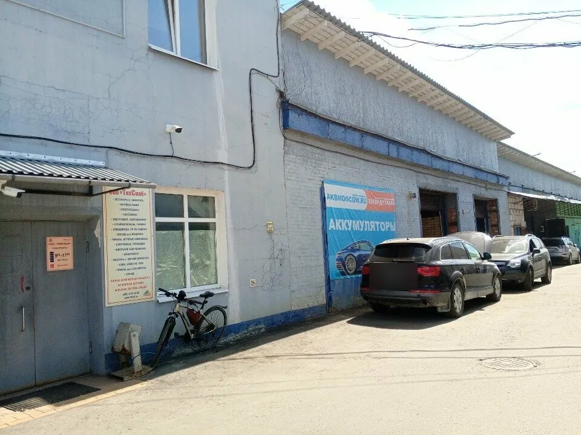
Открыть на Яндекс КартахМаршрут до сервиса